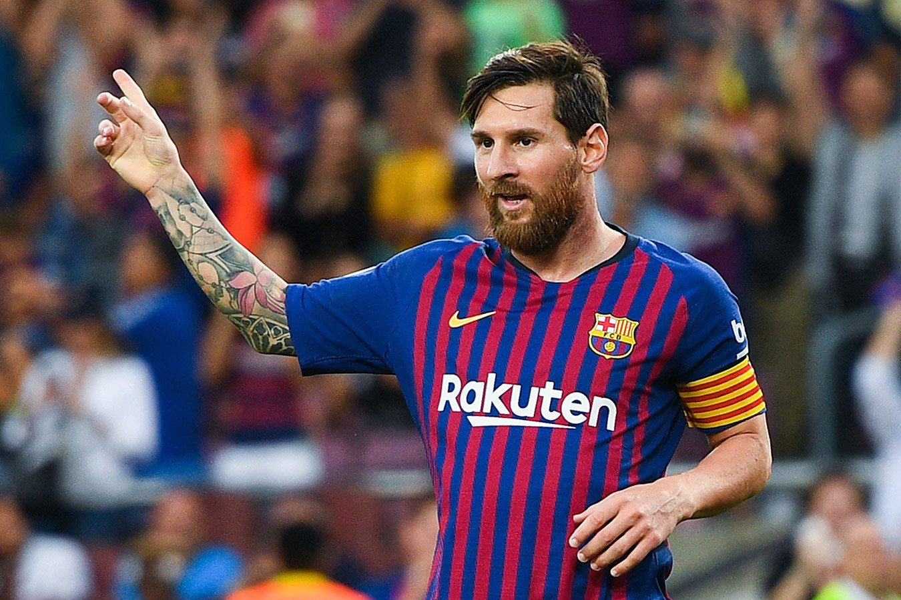

Текущий этап карьеры
Факт 1: Интер Майами и MLS
С июля 2023 года Месси играет за "Интер Майами" в американской лиге MLS. Его приход произвёл эффект "Мессиманией" - продажи билетов выросли в разы, а матчи с его участием транслируются по всему миру. В первом же сезоне он привёл команду к первому трофею в истории клуба - Кубку лиг.
Факт 2: Подготовка к ЧМ-2026
Месси подтвердил, что планирует сыграть на чемпионате мира 2026 года, который пройдёт в США, Канаде и Мексике. Ему будет 39 лет. Он сказал: "Хочу закончить карьеру в сборной без боли, играя и получая удовольствие".
Факт 3: Бизнес и инвестиции
Месси активно развивает бизнес: у него есть сеть отелей MIM, он владеет долей в футбольном клубе "Вальядолид", инвестирует в технологии и стартапы. Также у него эксклюзивный контракт с Adidas и собственная линия одежды.
Факт 4: Семейная жизнь
Месси счастливо женат на Антонеле Рокуццо с 2017 года (они знакомы с детства). У пары трое сыновей: Тьяго (2012), Матео (2015) и Чиро (2018). Семья живёт в Майами, дети ходят в обычную школу, а не в элитные частные учреждения.
Факт 5: Статистика 2023-2024
В первом полном сезоне в MLS Месси забил более 25 голов и сделал около 15 передач. Несмотря на возраст (36-37 лет), он продолжает показывать феноменальную игру и является лучшим игроком лиги по версии болельщиков.